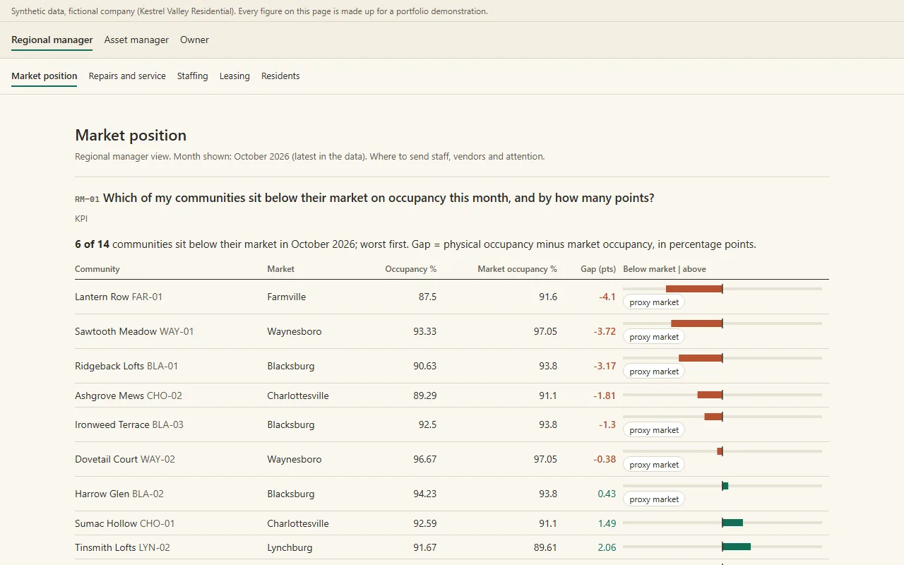
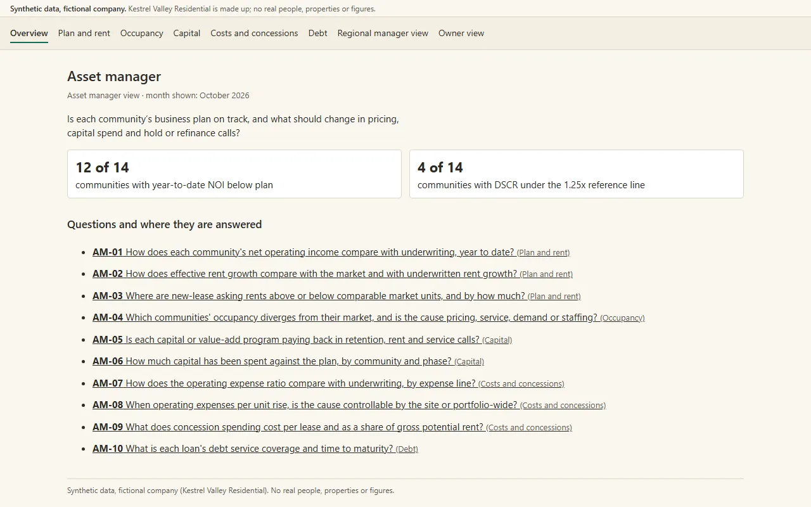
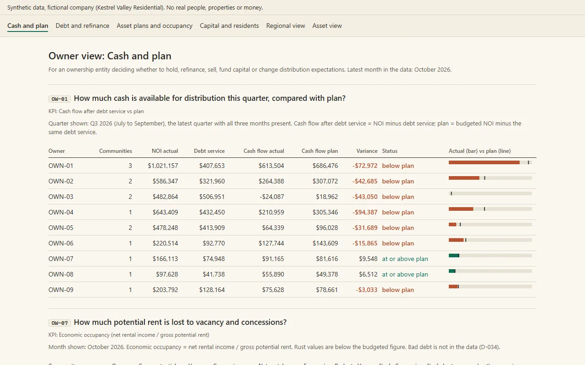

Kestrel Valley Property Operations
A claim-checked BI system for a regional property manager, with the misses shown
Role Architect & Validator Stack Databricks, SQL and Python Status Complete. Built on synthetic data.



Why a property's results move, and how to tell what caused it
Kestrel Valley Residential is a made-up company that manages residential communities across a region. This system is the reporting and analysis built for it, on realistic made-up records. Seven real causes were hidden in the data on purpose, along with three look-alikes that are not causes, so every finding the system makes can be checked against a known answer.
- Regional managerFive pages on market position, repairs and service, staffing, leasing and what residents are saying.
- Asset managerSix pages on occupancy, costs, the plan, capital and debt for one asset.
- OwnerFour pages on the assets, capital and debt, in the owner's terms.
- Grounded assistantAnswers from the handbook, a measure or a claim card, and refuses when none of them supports an answer.
What the system does
For each community, it compares results with the local market and with the community's own past, then tests possible explanations against the evidence. It writes a finding card for each, called a claim card. A card either names a cause, rules a suspect out, or says the evidence is not enough.
Why it can be trusted
Every card carries the query behind each number, and a card that cannot name a cause says so instead of guessing. The sections below say what was found, what was missed and what the testing did and did not show.
What a claim card looks like
Each card is a finding about one community. A card can name a cause, rule a suspect out, or say the evidence is not enough. Of 59 cards, 6 name a cause, 8 rule one out and 45 say the evidence is not enough. Each example below is explained in plain words, with the card's stored wording underneath.
- A cause is namedFrom September 2025 to June 2026, Sumac Hollow's residents renewed their leases 6.4 percentage points less often than in its market. The card ties this to maintenance jobs that sat vacant, which slowed repairs from 1.8 days to 6.4 days.As stored: Sumac Hollow renewed 6.4 points below its market from 2025-09 to 2026-06 because maintenance positions sat vacant and repair times rose from 1.8 to 6.4 days.Card CC-000018
- A cause is namedBy October 2026, Kettle Ridge's occupancy was 5.6 points above its market. The card ties this to buildings with new roofs and new heating and cooling: residents there renewed 15.2 points more often than in buildings still waiting for the work.As stored: Kettle Ridge occupancy ran 5.6 points above its market by 2026-10 because buildings with new roofs and HVAC renewed 15.2 points better than buildings still waiting.Card CC-000041
- A suspect is ruled outRepair requests at Harrow Glen jumped between June and July 2024. The card rules this out as a problem: the jump matched the number of people moving in, and resident ratings, survey scores and repair times did not change.As stored: The wo count jump at Harrow Glen from 2024-06 to 2024-07 is move-in volume: per move-in it matches its references, and stars, surveys and repair times are unchanged.Card CC-000006
- The evidence is not enoughFrom October 2024 to April 2025, Ridgeback Lofts' operating income ran 7.9 percent below its budget. The card does not name a cause: the closest explanation, higher costs on site, scored 0.33, too low to claim.As stored: Something moved at Ridgeback Lofts from 2024-10 to 2025-04 (noi vs budget pct -7.9) but the evidence does not name a cause, the closest reading, site cost overrun, scored 0.33.Card CC-000001
What was tested
Each figure is a result from the latest full test. Open a figure's note to see what was tested and what it does not show.
-
Hidden causes found
4 of 7
After one round of fixes, with the answers known
Seven causes were hidden in the data on purpose. The checker found four after one round of fixes, and the answer key was known while the fixes were made. Before the fixes it found 3 of 7.
- It missed three. They were not tuned further, and the reasons are written down.
- None of the 3 look-alikes was wrongly blamed.
- Reference numbers: found CH01, CH08, CH09 and CH11; missed CH02, CH04 and CH06.
Claim checker, 20 Nov 2026
-
Card numbers rechecked
895 of 895
Every number on a card matches the source records
Every number printed on a claim card was recalculated from the original records, and none was wrong. 137 of them are matched within a range, not to the exact digit.
- This shows the numbers are right. It does not show the system picked the right cause; the first figure covers that.
Claim checker, 20 Nov 2026
-
Assistant questions passed
38 of 58
First test of the question-answering assistant
The assistant answered 60 prepared questions, and 58 count toward the score. A question passes when the answer comes from the right source, or the assistant correctly declines to answer. 38 of 58 is the first result and the lowest score a later version may have. It is not a target.
- Questions that should be answered: 25 of 41 passed. Questions that should be declined: 13 of 17 passed.
- By where the answer comes from: handbook 13 of 17, business measures 10 of 11, claim cards 2 of 13.
- Two questions wait on handbook policy numbers and are left out of the 58.
Assistant test, 20 Nov 2026
-
Same answer every time
20 of 20
Repeatable, which is not the same as reliable
The 20 hardest questions were each asked 3 times and gave exactly the same answer every time.
- The assistant follows fixed rules and does not use a language model, so identical answers were expected.
- This does not show how it would do with a language model writing the answers, or with new questions.
Assistant test, 20 Nov 2026
How it is built
Each layer is built by generated SQL or script and checked before the next layer reads it.
- SourcesSynthetic recordsSeven planted causes, three decoys
- MartsDatabricks martsOne governed model
- InsightClaim cards59 cards, 895 values recomputed
- MeasuresShared definitions19 measures behind every view
- ViewsThree views15 pages
- AssistantCited answersCard, measure or handbook, or a refusal
Evaluation results
The 60 prepared questions were run automatically through the assistant, without a language model. Questions it declined are counted separately from questions it answered.
- Questions passed
- 38 of 58 (65.5%) on the first run. A later version must score at least this.
- Should be answered
- 25 of 41 passed. 9 were wrongly declined.
- Should be declined
- 13 of 17 passed. 1 was answered when it should have been declined.
- Known misses
- 5 questions depend on the three causes the checker missed, so they fail by design.
- Repeat runs
- 20 of 20 gave the same answer each time. That shows it is repeatable, not that it is reliable.
- On hold
- 2 questions wait on handbook policy numbers and are not counted in the 58.
The other failures are mostly questions sent to the wrong source, or answers missing a key word. One example is a question about why residents are leaving, which is wrongly declined. None is fixed yet.
Honest limits
The pages say plainly what the evidence does not yet support.
- Data
- Made up, with no real company's figures
- Hidden causes
- 4 of 7 found after one round of fixes with the answers known, and none of the 3 look-alikes wrongly blamed
- Loan maturity outlook (owner view)
- Shown as debt coverage, debt yield and months until the loan is due, not as a forecast
- Market growth (asset view)
- Shows the market's growth only
- Return on capital (asset view)
- There is no claim-card type for capital return, so none is shown
- Repair wait times (regional view)
- The typical wait is the lower of the two middle values when the count is even
- Loans past their due date
- Show refinanced instead of a negative number of months
These limits were decided and recorded as the system was built, and each is shown on the page it affects.